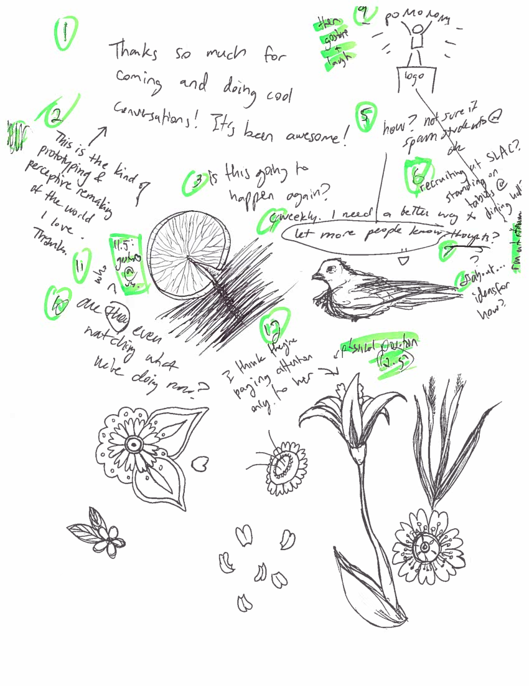

Needs Analysis
Proposal
We propose an interface that is intended to assist in communication when one or more people are communicating nonverbally. Currently, there are several non-technical and technical solutions which have been adopted with varying levels of success. For example, paper and pen can be used if they are on hand, and note or chat applications on phones can be used if the technology is available and the users are willing to exchange contact information. All these options depend on the users’ abilities--just as verbal communication is not ideal for everyone, written communication can be inaccessible in some cases. With this in mind, we must be even more careful to keep accessibility in mind as we develop this interface. We will identify the pain points of our user group and aim to change the design of our product to remove some or all of these pain points.
User Group
Potential users are anyone who prefers to or must communicate nonverbally. This can range from those who are deaf or hard of hearing to someone with selective mutism, or even someone who is temporarily not able to speak due to an anxiety attack. We plan to focus on a small subset of these potential users but have not yet determined who. We are planning on waiting until we have been able to access more users before defining our focus.
Current User Interaction with this Problem/Activity
Our prospective users can feel anxious when they must communicate with others. Users often will take steps to avoid verbal communication with others. One potential user, Lemon, that we spoke to will often avoid speaking with others. Lemon is deaf oral, which means that they are able to speak but not hear. They prefer to speak to others because it is quicker and more effective. However, they often avoid speaking out loud in order to prevent others from assuming that they can hear. Lemon used a few different techniques to avoid verbal conversation. For example, they would write a note containing a question or prompt, and then approach the person with whom they need to interact. Lemon would explain the context of the prompt out loud, drop off the piece of paper, and exit as quickly as possible in order to avoid being spoken to.
Users are often frustrated about the assumptions that others make about their method of communication. One user, Pinyon, can be nonverbal if they are emotionally compromised. They often are frustrated because their primary method of communication is through body language. However, others often assume that not speaking is a problem that must be fixed, so they often ignore signals that Pinyon believes should be clear to others. One example of this is an interaction that Pinyon was involved in. Pinyon wanted to be left alone by another person, so they closed the door and locked it on the other person. They felt that this was a very clear nonverbal sign to leave. However, the other person assumed that there must be something “wrong”, and so they attempted to get a key in order to unlock the door.
Another problematic assumption that people make is that they assume that others prefer to have symmetrical conversation. This means that they will respond in the same form of communication that the other person was using. Lemon has encountered this problem. They told us of an example in which they told the other person that they could not hear. The other person responded by speaking back. When Lemon pulled out a pen and paper, the other person responded by writing back on the pen and paper, just like Lemon wanted. However, when Lemon spoke again, the other person responded by speaking again.
Requirements
- The mode of communication should be apparent to the “other” user; the main user ideally shouldn’t need to explain that they would prefer nonvocal communication.
- The solution should be somehow radically different from (better than?!) the current form-factor of digital conversations.
- The solution should provide more flexibility than, say, a notepad application.
- The solution must lend itself easily to symmetric, back-and-forth communication on a single device.
- The solution should leave the information in the hands of the device owner/main user (e.g., local data, not spread online).
- The solution must have little-to-no setup time--no exchanging numbers or accounts, for example.
Impact
A successful solution will allow our users to communicate easily with anyone. The ability to easily communicate with others would prevent the anxiety that users might feel about interacting with new people. Users would have to avoid interaction less frequently, which would help them be more effective in the tasks they would like to accomplish.
A successful solution to this problem would also allow for more organic conversation. This will increase the positivity of the interaction. Also, providing a symmetric way for people who are nonverbal to communicate would allow them to more easily maintain their conversations, as well as make them feel like equals with the person with whom they are communicating.
Additionally, a solution in this space will help prevent fatigue for our users and those with whom they interact. Lemon mentioned that they often avoid interactions that they judge will be difficult simply because they are already tired from putting so much effort into communication or they are saving their energy for interactions that will be more impactful. For Lemon, parsing and responding vocally takes more concentration and energy than other methods of communication. Reducing the mental strain of communication would allow users to interact with people more often, and reduce the amount of times that they must avoid interactions.
A successful solution would also have impact for people who aren’t nonverbal. A successful solution would teach people who are verbal about the assumptions that they make about communication and allow them to think more critically about how they interact with others and how they can make affordances for others in order to interact with them. Pinyon also felt that teaching others about their assumed norms was important. They felt that it would be good if nonverbal communication could be normalized.
[Ideally, conversations can be more organic? Since this will provide a symmetric way to communicate and asymmetric conversations are harder to maintain…]
Possible Limitations/Shortcomings
It is possible that our interface will not be able to address accessibility needs (in terms of manual dexterity, etc.) any better than a chat interface. Since our platform will likely be hosted on a smart mobile device, we won’t be able to address the users that do not own one. If our interface does end up being truly revolutionary, we could run into the problem with the public’s resistance against something that’s totally strange to them. This could mean that it will take longer for our interface to be received and to be widely used as a communication tool.
Artifact 1: Lexicon
| Word | Defintion |
|---|---|
| Nonvocal | Communicating without speaking, being spoken to.
|
| Non-emergency | Low-stakes or casual situation. For example, ordering a coffee or chatting over dinner. |
| Conversation | Back-and-forth communication. Contrast to giving a message and leaving, or giving a speech. |
| Phone | Smartphone (so, texting, apps, on-screen keyboards, etc.) - the baseline level of tech we plan on using. |
| Symmetric communication | Communication in the same medium
|
| Asymmetric communication | Communication not using the same medium
|
| Oral deaf/deaf-oral | Deaf, but can vocalize for communication.
|
| Voice off | Without speaking, e.g. an immersive ASL course. |
| Temporarily nonverbal | Not spearking for a period of time, though typically able and willing to speak at other occasions.
|
Artifact 2: Conversation on paper
Notes in green were made after the conversation, numbering statements and cataloguing body language and gestures.
Artifact 3: An early, naive design sketch